1. Три контура учёта
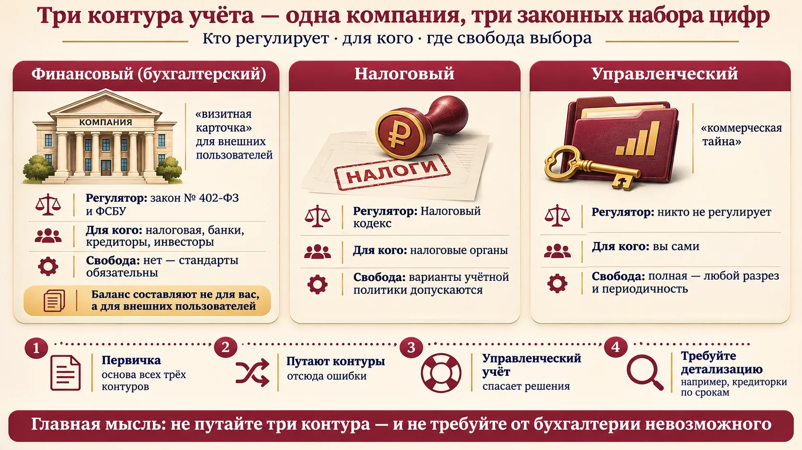
У любой компании три системы учёта. Финансовый (бухгалтерский) ведётся по закону № 402-ФЗ и федеральным стандартам и предназначен внешним пользователям: налоговой, банкам, кредиторам, инвесторам. Налоговый нужен для исчисления налогов по Налоговому кодексу. Управленческий — внутреннее дело компании: любой разрез, формат и периодичность, по сути — коммерческая тайна.
🧭 Краткая справка
Бухгалтерская отчётность организаций публикуется и доступна в открытом виде — контрагенты и банки видят ваши цифры раньше, чем вы успеваете их прокомментировать.
➕ Дополнение: Федеральный закон «О бухгалтерском учёте» № 402-ФЗ.
2. Три мифа о прибыли и деньгах
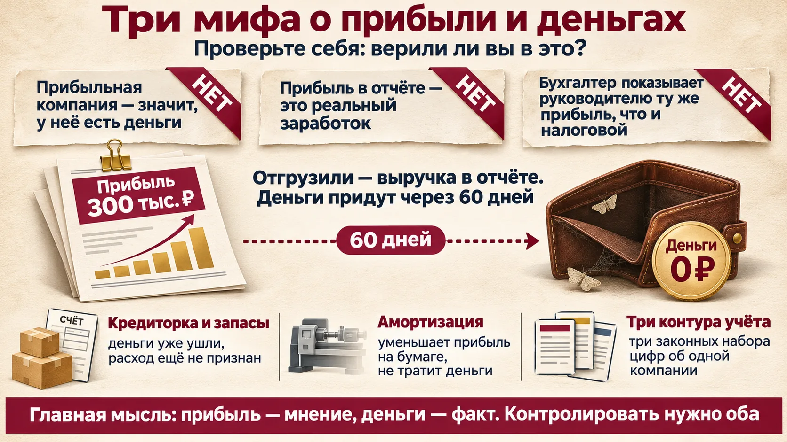
Ни одно утверждение не соответствует действительности. Продукцию отгрузили — выручка отражается в учёте по факту операции, а деньги поступят через какой-то срок: деньги и прибыль живут в разных измерениях. Прибыль — расчётная категория, она зависит от правил и оценок. А три контура учёта законно дают три разных набора цифр об одной компании.
🧭 Краткая справка
Кассовый разрыв — ситуация, когда поступление денег позже, чем расход. Управляется графиком оборота денежных средств.
3. Пирамида нормативной базы
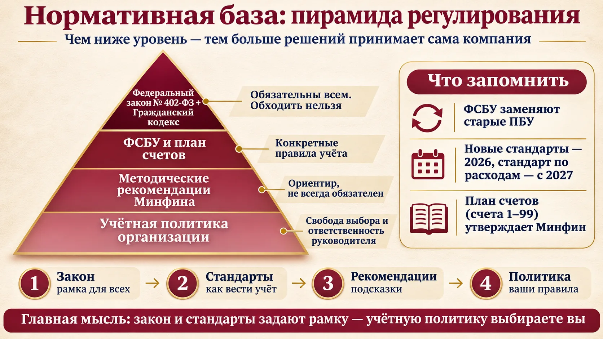
Учёт регулируется пирамидой. Вершина — закон № 402-ФЗ и Гражданский кодекс: обязательны всем. Дальше — ФСБУ и план счетов: конкретные правила ведения учёта. Ниже — методические рекомендации Минфина: не всегда обязательны, задают ориентир. Основание — учётная политика организации: здесь начинается свобода выбора и ответственность руководителя.
🧭 Краткая справка
ФСБУ — федеральные стандарты бухгалтерского учёта, пришли на смену положениям по бухгалтерскому учёту (ПБУ); действующие ФСБУ ближе к международным стандартам (МСФО).
➕ Дополнение: новые ФСБУ введены в 2026 году, стандарт по расходам вступает с 2027 года — следите за разделом Минфина: стандарты бухгалтерского учёта.
4. Ответственность руководителя: статья 7 закона
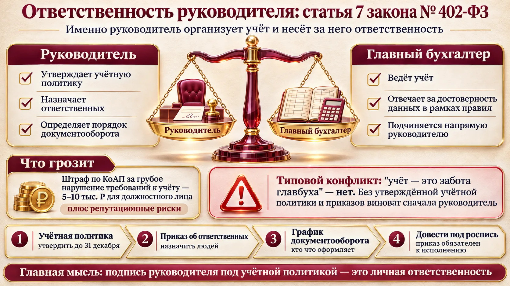
Учёт обязателен для организаций (ИП и самозанятые могут не вести). Статья 7 закона № 402-ФЗ: именно руководитель организует ведение учёта и несёт за это ответственность. Главный бухгалтер подчиняется напрямую руководителю. Распределение: руководитель утверждает учётную политику, назначает ответственных и определяет порядок документооборота; главбух отвечает за ведение учёта и достоверность данных в рамках этих правил.
🧭 Краткая справка
Грубое нарушение требований к бухгалтерскому учёту — состав по части 2 статьи 15.11 КоАП РФ: для должностных лиц штраф 5–10 тыс. рублей.
➕ Дополнение: КоАП РФ, статья 15.11.
5. Баланс: актив = пассив
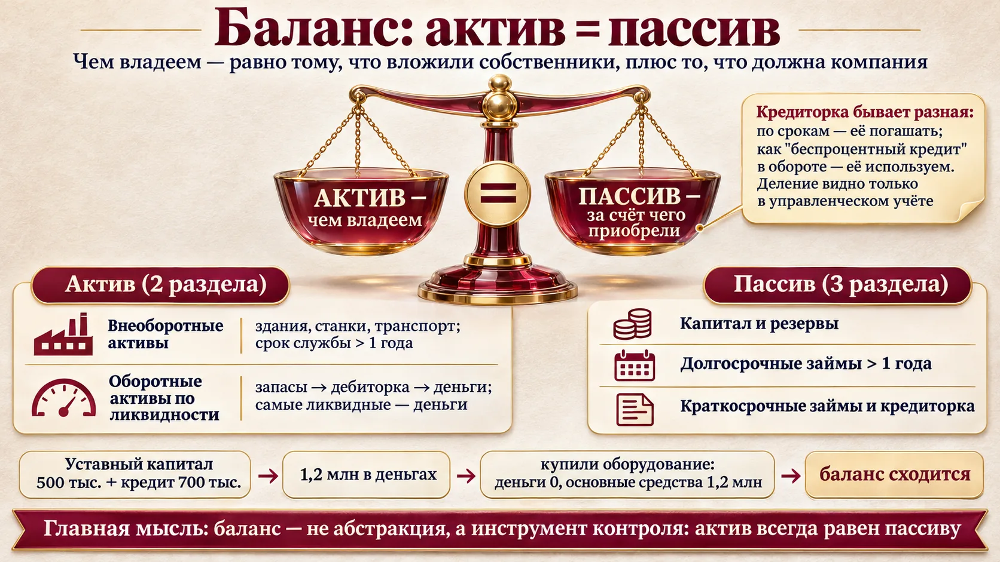
Закон № 402-ФЗ относит к объектам учёта пять групп: факты хозяйственной жизни (сделки и события, меняющие положение компании), активы, обязательства, источники финансирования (собственный и заёмный капитал) и финансовый результат (доходы и расходы). Баланс показывает активы — чем владеет компания: внеоборотные (срок службы больше года) и оборотные, упорядоченные по ликвидности от запасов до денег. Пассив показывает источники этих активов: капитал и резервы, долгосрочные займы, краткосрочные займы и кредиторскую задолженность. Основное равенство: актив = пассив. Не сошлось — в учёте ошибка (или манипуляция).
🧭 Краткая справка
Ликвидность — срочность реализации актива без существенных потерь. Машину, выехав из автосалона, уже продают примерно на 10% дешевле.
6. Учётный цикл и двойная запись
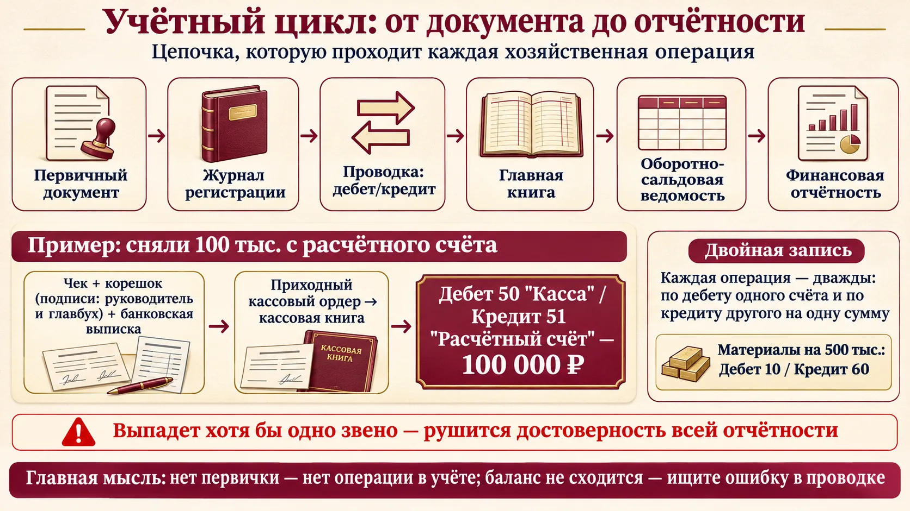
Каждая операция проходит цепочку: первичный документ → журнал регистрации → проводка → главная книга → оборотно-сальдовая ведомость → отчётность. Двойная запись — фундамент: операция отражается дважды, по дебету одного счёта и по кредиту другого, на одну сумму. Получили материалы на 500 тысяч — дебет 10 «Материалы», кредит 60 «Расчёты с поставщиками». План счетов (счета 1–99 и забалансовые) утверждает Минфин, а рабочий план счетов организация закрепляет в учётной политике.
🧭 Краткая справка
Пример цикла: сняли 100 тыс. с расчётного счёта → чек и выписка → приходный кассовый ордер → кассовая книга → проводка «Дебет 50 / Кредит 51» → главная книга → отчётность.
7. Учётная политика: правила игры на год
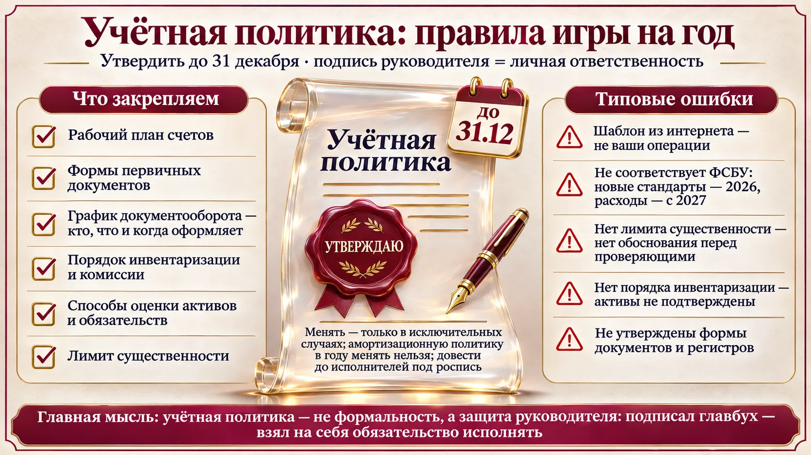
Учётная политика закрепляет рабочий план счетов, формы первичных документов, график документооборота, порядок инвентаризации, способы оценки и лимит существенности. Утвердить её нужно до 31 декабря, чтобы с 1 января она действовала; менять можно только в исключительных случаях, амортизационную политику в течение года менять нельзя. Типовые ошибки: шаблон из интернета, несоответствие стандартам, нет лимита существенности, не прописана инвентаризация, не утверждены формы документов.
🧭 Краткая справка
Лимит существенности — порог, ниже которого отклонения признаются несущественными; без утверждённого лимита решения бухгалтерии сложно обосновать перед проверяющими.
8. Первичный документ и инвентаризация
Если в первичном документе нет хотя бы одного обязательного реквизита, он не имеет юридической силы — операцию снимут при проверке. На практике чаще всего забывают натуральный и денежный измерители и расшифровку подписи. Документ с квалифицированной электронной подписью равен бумажному. Инвентаризацию запускает руководитель приказом; без неё нельзя составлять годовую отчётность, сменять материально ответственных лиц; её проводят и при выявлении хищений. Результаты утверждает руководитель — без его решения документы силы не имеют.
9. Пять форм отчётности
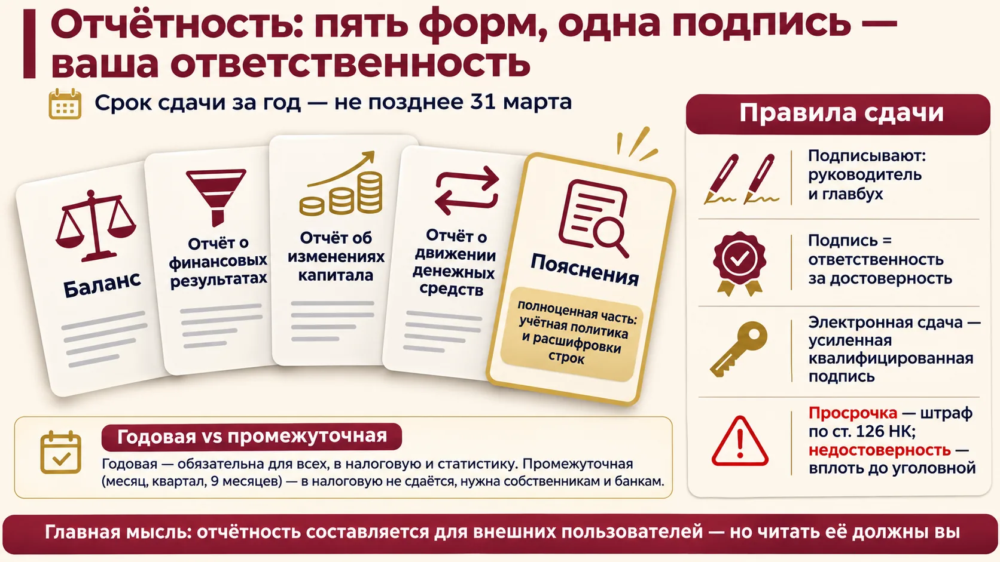
Отчётность — комплект из пяти элементов: баланс, отчёт о финансовых результатах, отчёт об изменениях капитала, отчёт о движении денежных средств и пояснения. Пояснения — полноценная часть: там раскрываются учётная политика, существенные допущения и расшифровки строк, чтобы было видно, из чего состоят крупные статьи баланса. Для малых предприятий и некоторых НКО, не подлежащих обязательному аудиту, возможна упрощённая отчётность: формы с укрупнёнными строками и меньшим объёмом раскрытий. Это сокращённый комплект форм, а не упрощённый бухгалтерский учёт; при обязательном аудите или требованиях отдельных стандартов упрощённые формы применять нельзя. У них ниже трудозатраты, но меньше данных для анализа — право на упрощение нужно проверять вместе с бухгалтером. Срок сдачи годовой отчётности — не позднее трёх месяцев после отчётной даты, для календарного года это 31 марта. Подписывают руководитель и главбух; подпись означает личную ответственность за достоверность.
🧭 Краткая справка
Электронная сдача требует усиленной квалифицированной подписи. За просрочку — штраф по статье 126 Налогового кодекса; за недостоверные данные отвечает прежде всего руководитель.
10. Чтение баланса и отчёта о прибылях и убытках
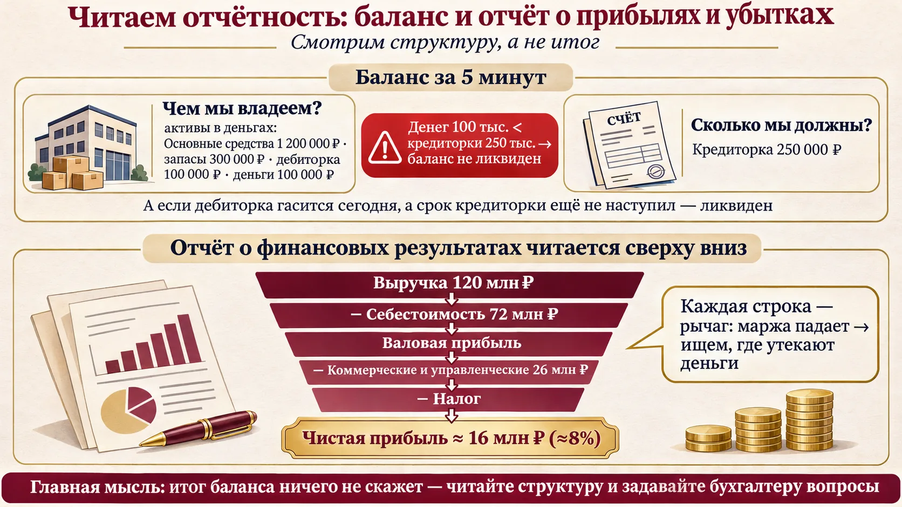
Баланс за пять минут отвечает на два вопроса: чем мы владеем и сколько мы должны. В примере занятия денег 100 тысяч при кредиторке 250 тысяч — погашать нечем, баланс не ликвиден; если дебиторка гасится сегодня, а срок кредиторки ещё не наступил — ликвиден. Отчёт о финансовых результатах читается сверху вниз: выручка 120 млн, минус себестоимость 72, минус коммерческие и управленческие 26, минус налог — чистая прибыль около 16 млн. Каждая строка — рычаг: маржа падает — ищем, где утекают деньги.
Тренажёр: ликвидность на пальцах
Меняйте цифры — смотрите вывод. Все значения — неотрицательные.
🧭 Краткая справка
Чистая прибыль в примере занятия — около 8% выручки: «красивый» рост выручки может давать скромную прибыль.
11. ОДДС: три потока. Прибыль — мнение, деньги — факт
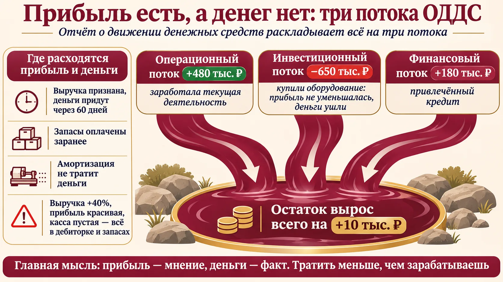
Отчёт о движении денежных средств раскладывает поступления и платежи на три потока. Пример занятия: операционный поток плюс 480 тысяч — заработала текущая деятельность; инвестиционный минус 650 — купили оборудование, при этом прибыль не уменьшалась; финансовый плюс 180 — привлечённый кредит. Итог: остаток вырос всего на 10 тысяч.
🧭 Краткая справка
Три потока: операционная деятельность, инвестиции (основные средства, вложения), финансирование (кредиты, вклады собственников). Совет занятия: тратить меньше, чем зарабатываешь — тогда деньги будут.
12. Капитал и коэффициенты
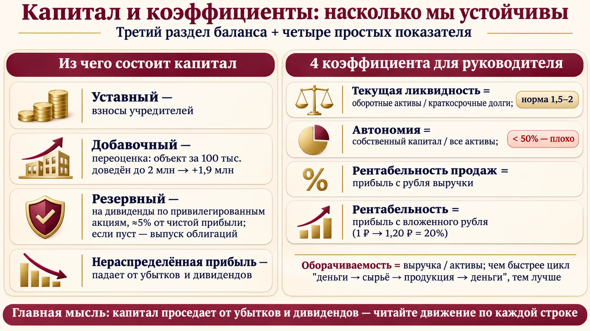
Капитал — третий раздел баланса: уставный (взносы учредителей), добавочный (переоценка: объект за 100 тысяч доведён до рыночных 2 млн — плюс 1,9 млн в добавочный капитал), резервный (обеспечивает дивиденды по привилегированным акциям; если пуст — компания может один раз выпустить облигации), нераспределённая прибыль (падает от убытков и дивидендов). Быстрые показатели: текущая ликвидность (норматив 1,5–2), автономия (доля собственного капитала; менее 50% — плохо), рентабельность продаж (прибыль с рубля выручки), рентабельность (прибыль с вложенного рубля) и оборачиваемость (выручка к активам).
🧭 Краткая справка
Справедливая (рыночная) стоимость — ориентир МСФО и современных ФСБУ; рыночная оценка активов важна и для кредитования: банк, как правило, кредитует до 60% стоимости актива.
13. Пять искажений отчётности
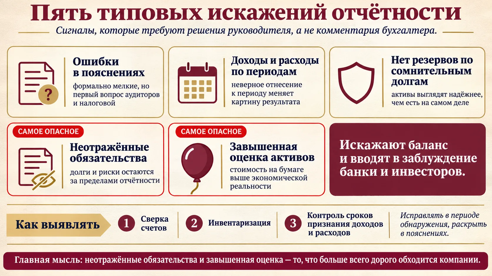
Пять типовых искажений: ошибки в пояснениях; доходы и расходы по периодам; отсутствие резервов по сомнительным долгам; неотражённые обязательства; неверная оценка. Самое опасное — неотражённые обязательства и завышенная оценка активов: они искажают баланс и вводят в заблуждение банки и инвесторов. Ошибки в пояснениях формально менее существенны, но именно они чаще вызывают вопросы аудиторов и налоговой.
🧭 Краткая справка
Резерв по сомнительным долгам — оценочная статья для дебиторской задолженности, взыскание которой вызывает сомнения. Без резерва прибыль и активы завышены.
Что выучить к аттестации
Квиз с разбором
Шпаргалка
Актив = Пассив
Прибыль = мнение · Деньги = факт
Дебет 10 «Материалы» / Кредит 60 «Расчёты с поставщиками» — 500 000 ₽
Годовая отчётность: не позднее 31 марта